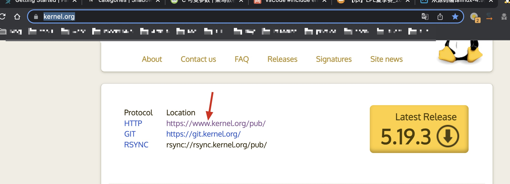
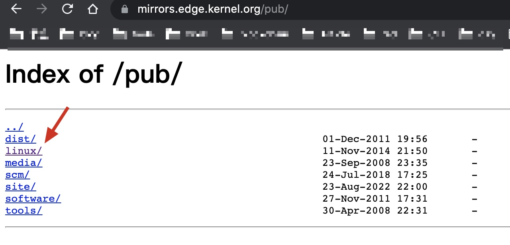
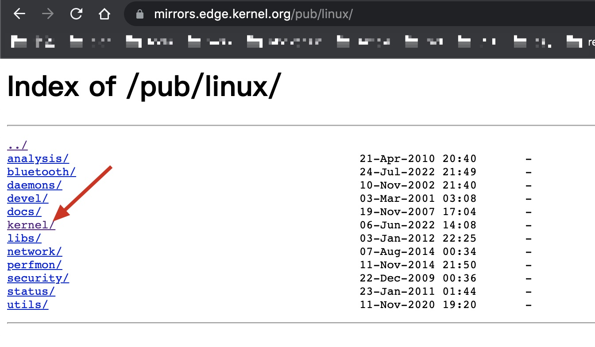
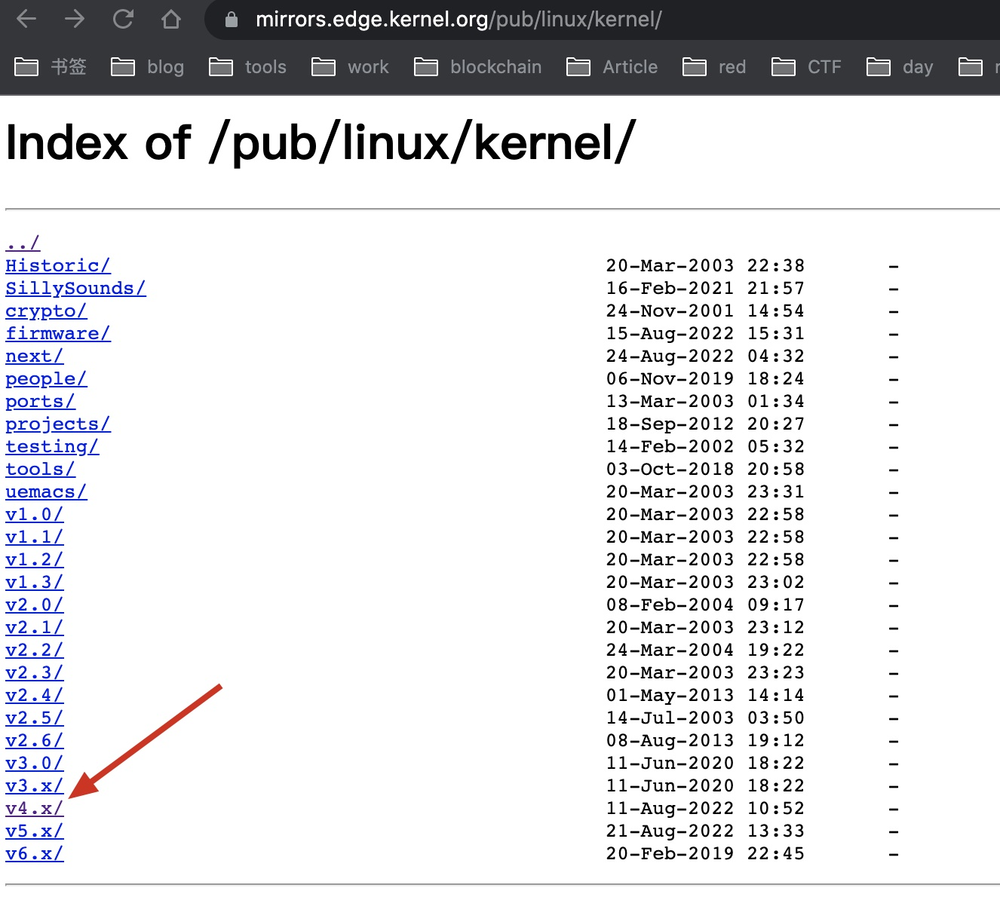
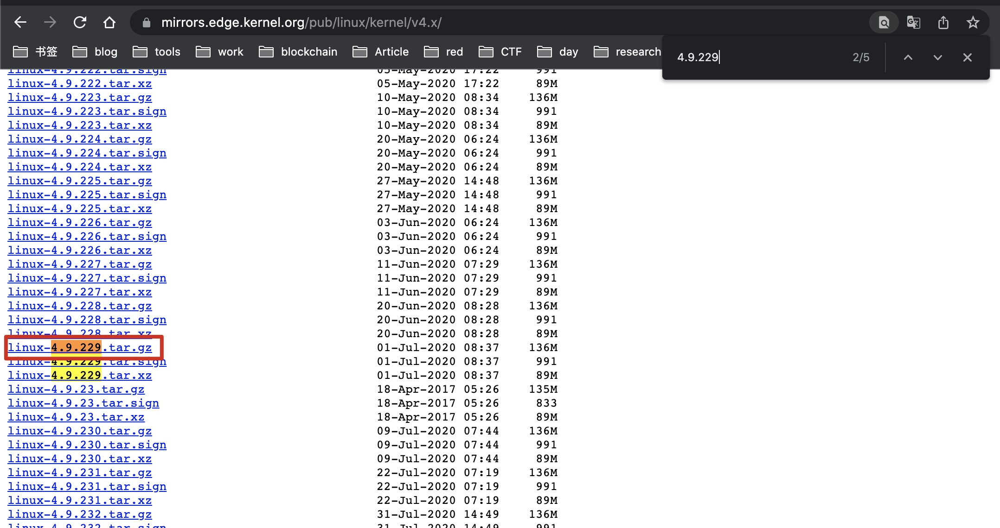
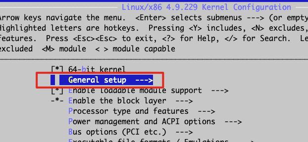
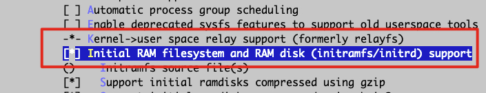
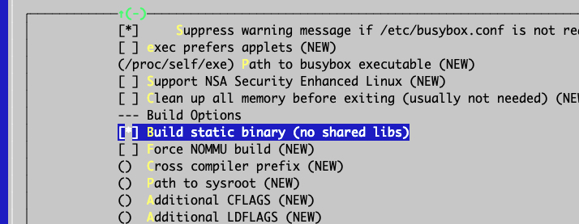

编译Linux源码及文件系统
1. 下载linux内核源码 访问：https://www.kernel.org/
点击如下

点击linux

点击kernel

我们下载4.x的版本

下载4.9.229版本

复制连接地址，使用如下命令下载
1 wget -c https://mi rrors.edge.kernel.org/pub/ linux/kernel/ v4.x/linux-4.9 .229 .tar.gz
-c参数指的是断点续传，取消后可以接着传
2. linux内核源码目录介绍 下载完后我们可以进入目录
arch目录
arch目录是CPU体系相关的代码，有arm架构、x86架构等等。
1 2 3 4 [root@debian arch ]# ls alpha arm64 c6x h8300 Kconfig metag mn10300 parisc score tile x86arc avr32 cris hexagon m32r microblaze nios2 powerpc sh um xtensa arm blackfin frv ia64 m68k mips openrisc s390 sparc unicore32
每个架构下面还有内核相关代码
1 2 3 4 5 6 [root @debian arch ] # cd x86[root @debian x86 ] # lsboot events Kconfig kvm Makefile_32 . configs ia32 Kconfig .Makefile . crypto include Kconfig . entry Kbuild kernel Makefile mm platform realmode xen
Documentation
内核里的技术文档，关于内核参数、配置、特性等都有
1 2 3 4 5 6 7 8 [root@debian linux-4.9 .229 ]# cd Documentation [root@debian Documentation]# ls 00 -INDEX gpu parisc80211 hid parport-lowlevel.txtABI highuid.txt parport.txt accounting HOWTO PCI acpi hwmon pcmcia .......
firmware
固件相关代码
init
init是内核启动相关的代码
1 2 3 4 [root@debian linux-4.9 .229 ]# cd init [root@debian init]# ls calibrate.c do_mounts.h do_mounts_md.c initramfs.c Kconfig Makefile version.c do_mounts.c do_mounts_initrd.c do_mounts_rd.c init_task.c main.c noinitramfs.c
main.c里面有一个start_kernel函数，这是开始执行C代码的位置，在此之前都是汇编代码。
1 2 3 4 5 6 7 8 9 10 11 asmlinkage __visible void __init start_kernel (void ) char *command_line; char *after_dashes; set_task_stack_end_magic(&init_task); smp_setup_processor_id(); debug_objects_early_init();
block
block是块设备相关代码
1 2 3 4 5 6 7 8 9 10 11 [root@debian linux-4.9 .229 ]# cd block [root@debian block]# ls badblocks.c blk-ioc.c blk-mq-tag.c bsg.c ioprio.c bio.c blk-lib.c blk-mq-tag.h bsg-lib.c Kconfig bio-integrity.c blk-map.c blk-settings.c cfq-iosched.c Kconfig.iosched blk-cgroup.c blk-merge.c blk-softirq.c cmdline-parser.c Makefile blk-core.c blk-mq.c blk-sysfs.c compat_ioctl.c noop-iosched.c blk-exec.c blk-mq-cpumap.c blk-tag.c deadline-iosched.c partition-generic.c blk-flush.c blk-mq.h blk-throttle.c elevator.c partitions blk.h blk-mq-pci.c blk-timeout.c genhd.c scsi_ioctl.c blk-integrity.c blk-mq-sysfs.c bounce.c ioctl.c t10 -pi.c
drivers
drivers代码量很大，外设特别多，所以需要更多的驱动支持。
1 2 3 4 5 6 7 [root@debian linux-4.9 .229 ]# cd drivers [root@debian drivers]# ls accessibility cpufreq gpu Kconfig net pnp sfi vhost acpi cpuidle hid leds nfc power sh video amba crypto hsi lguest ntb powercap sn virt android dax hv lightnvm nubus pps soc virtio ata dca hwmon macintosh nvdimm ps3 spi vlyn
ipc
ipc是进程通讯相关代码
security
安全相关代码
net
协议栈相关代码
sound
声音相关代码
fs
文件系统相关代码
1 2 3 4 5 6 7 [root@debian linux-4.9 .229 ]# cd fs/ [root@debian fs]# ls 9 p cifs exportfs ioctl.c nilfs2 read_write.c adfs coda ext2 iomap.c nls reiserfs affs compat_binfmt_elf.c ext4 isofs no-block.c romfs afs compat.c f2 fs jbd2 notify ....
kernel
kernel是内核核心相关代码，进程管理、进程调度等内核核心代码
include
头文件代码
mm
内存管理相关代码
3. linux内核编译 1. 指定硬件体系架构
我这里选择x86
1 [root@debian linux-4.9.229]# export ARCH =x86
2. 配置board config
此处为x86_64_deconfig
1 2 3 4 5 6 7 8 9 10 [root@debian linux-4.9 .229 ] HOSTCC scripts/basic/ fixdep HOSTCC scripts/kconfig/ conf.o SHIPPED scripts/kconfig/ zconf.tab.c SHIPPED scripts/kconfig/ zconf.lex.c SHIPPED scripts/kconfig/ zconf.hash.c HOSTCC scripts/kconfig/ zconf.tab.o HOSTLD scripts/kconfig/ conf
3. 配置内核
1 2 3 4 5 6 [root@debian linux-4.9 .229 ] HOSTCC scripts/kconfig/m conf.o <command-line>: fatal error: curses.h: 没有那个文件或目录 compilation terminated. make[1 ]: *** [scripts/Makefile.host:118：scripts/ kconfig/mconf.o] 错误 1 make: *** [Makefile:553 ：menuconfig] 错误 2
这里执行会报错，需要安装apt install libncurses5-dev
1 [root@debian linux-4.9 .229 ]# apt install libncurses5-dev
再次执行，就会弹出配置界面
1 2 3 4 5 6 7 8 9 10 11 12 13 14 15 [root@debian linux-4.9 .229 ] HOSTCC scripts/kconfig/m conf.o HOSTCC scripts/kconfig/ zconf.tab.o HOSTCC scripts/kconfig/ lxdialog/checklist.o HOSTCC scripts/kconfig/ lxdialog/util.o HOSTCC scripts/kconfig/ lxdialog/inputbox.o HOSTCC scripts/kconfig/ lxdialog/textbox.o HOSTCC scripts/kconfig/ lxdialog/yesno.o HOSTCC scripts/kconfig/ lxdialog/menubox.o HOSTLD scripts/kconfig/m conf scripts/kconfig/m conf Kconfig *** End of the configuration. *** Execute 'make' to start the build or try 'make help'
需要支持支持ramdisk驱动，如下操作
选择General setup回车

确保Initial RAM 有*号，被选中。

然后选择Exit，退到上一级目录。
进入Device Drivers, 再进入Block devices。给RAM block device support打上*。同时把Default RAM disk size调大一点到65536。
1 2 3 4 5 6 7 8 9 10 General setup ---> Device Drivers ---> [*] Block devices ---> <*> RAM block device support (65536 ) Default RAM disk size (kbytes)
M表示编程驱动
*表示把驱动编到内核里面
配置好后选择Save,再选择Exit退出，
4. 编译
执行make进行编译。编译好后在
1 2 [root@debian linux-4.9.229]# ls -l arch /x86/boot /bzImage -rw-r--r-- 1 root root 6795248 8月 24 21:24 arch /x86/boot /bzImage
4. 编译文件系统 4.1 下载 访问 busybox.net
这里找到1.30.1进行下载
1 wget -c https://busybox.net/downloads/busybox-1 .30 .1 .tar.bz2
解压
1 tar -jxvf busybox-1 .30 .1 .tar.bz2
4.2 设置静态链接库 1 2 3 [root@debian busybox-1.30 .1 ] HOSTCC scripts/basic/ fixdep HOSTCC scripts/basic/ split-include
进入Settings，设置如下

4.3 编译 1 2 3 [root@debian busybox-1.30 .1 ] SPLIT include /autoconf.h -> include /config/* GEN include /bbconfigopts.h
make会编译busybox, make install 会将工具busybox及工具安装到源码下install目录
1 2 3 [root@debian busybox-1.30 .1 ]# cd _install/ [root@debian _install]# ls bin linuxrc sbin usr
4.4 完善busybox文件系统 1 2 3 [root@debian _install]# mkdir -p etc dev mnt [root@debian _install]# mkdir -p proc sys tmp [root@debian _install]# mkdir -p etc/init.d
配置挂载目录
vim etc/fstab
1 2 3 proc /proc proc defaults 0 0tmpfs /tmp tmpfs defaults 0 0sysfs /sys sysfs defaults 0 0
配置busybox启动时候的代码
vim etc/init.d/rcS
1 2 3 4 5 6 7 8 echo -e "Welcome to tinyLinux" /bin/m ount -aecho -e "Remounting the root filesystem" mount -o remount,rw / mkdir -p /dev/ pts mount -t devpts devpts /dev/ pts echo /sbin/m dev > /proc/ sys/kernel/ hotplug mdev -s
给予可执行权限
1 2 [root@debian _install]# chmod 755 etc/init.d/rcS [root@debian _install]#
busybox启动
[root@debian _install]# vim etc/inittab
1 2 3 4 ::sysinit:/etc/init.d/rcS ::respawn:-/bin/sh ::askfirst:-/bin/sh ::ctrlaltdel:/bin/umount -a -r
赋予可执行权限
1 2 [root@debian _install]# chmod 755 etc/inittab [root@debian _install]#
1 2 3 4 [root@debian _install]# cd dev [root@debian dev]# mknod console c 5 1 [root@debian dev]# mknod null c 1 3 [root@debian dev]# mknod tty1 c 4
4.5 制作根文件系统镜像文件 切换到_install的父级目录
1 2 3 4 5 6 7 8 9 10 11 12 13 14 15 16 17 18 19 20 21 22 23 24 25 26 27 28 [root@debian busybox-1.30 .1 ]# rm -rf rootfs.ext3 [root@debian busybox-1.30 .1 ]# rm -rf fs [root@debian busybox-1.30 .1 ]# dd if=/dev/zero of=./rootfs.ext3 bs=1M count=32 记录了32 +0 的读入 记录了32 +0 的写出 33554432 bytes (34 MB, 32 MiB) copied, 0.0537795 s, 624 MB/s[root@debian busybox-1.30 .1 ]# mkfs.ext3 rootfs.ext3 mke2fs 1.44 .5 (15 -Dec -2018 ) Discarding device blocks: done Creating filesystem with 32768 1 k blocks and 8192 inodes Filesystem UUID: 85 ccc327-919 a-4246 -ae60-a085a09d6cdb ... [root@debian busybox-1.30 .1 ]# mkdir fs [root@debian busybox-1.30 .1 ]# mount -o loop rootfs.ext3 ./fs [root@debian busybox-1.30 .1 ]# cp -rf ./_install/* ./fs [root@debian busybox-1.30 .1 ]# umount ./fs [root@debian busybox-1.30 .1 ]# gzip --best -c rootfs.ext3 > rootfs.img.gz
4.6 启动内核 通过qemu模拟器启动我们自己编译的内核
1 apt-get install qemu-system -x86
启动自己编译的linux
1 2 3 4 5 6 qemu-system-x86_64 \ -kernel ./linux-4.9.229/ arch/x86_64/ boot/bzImage \ -initrd ./busybox-1.30.1/ rootfs.img.gz \ -append "root=/dev/ram init=/linuxrc console=ttyS0" \ -nographic \ -serial mon:stdio
1 2 3 Please press Enter to activate this console . / Linux (none) 4.9 .229
退出
exit
control + a
x